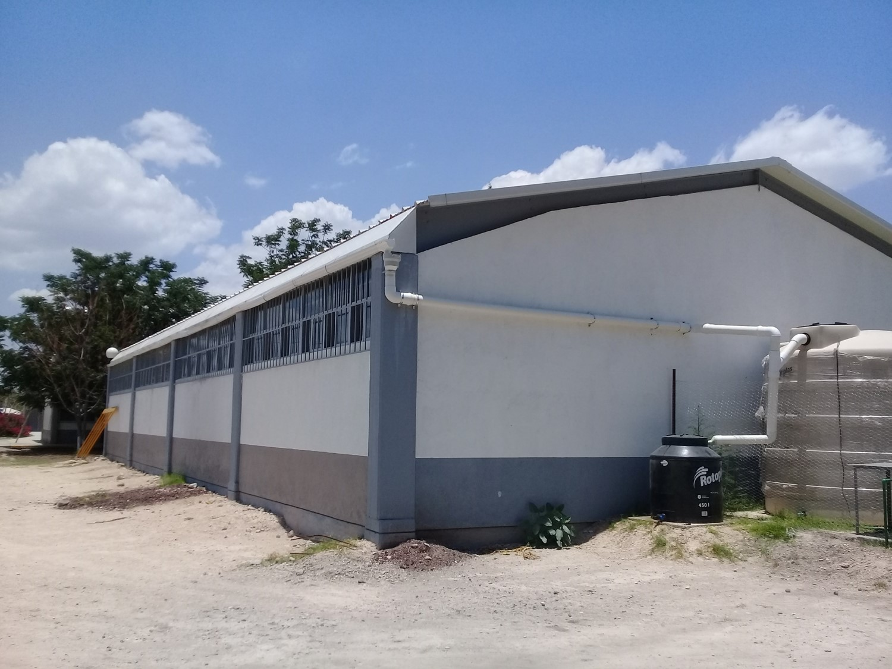

Aprovechamiento de la lluvia en nuestro plantelRegresar |
Primero se comenzo buscando un lugar para poner el recolector de agua |
|
 Se instalo los recursos para usarla. |
|
Se fue informando sobre el proyecto a los alumnos |
|
se cabó Una sanja para depositar el agua |
|
Quedo realizado el proyecto para la preparatoria. |